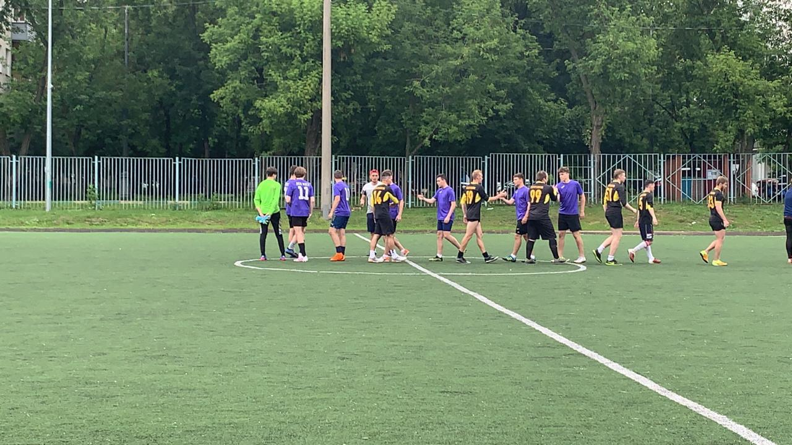
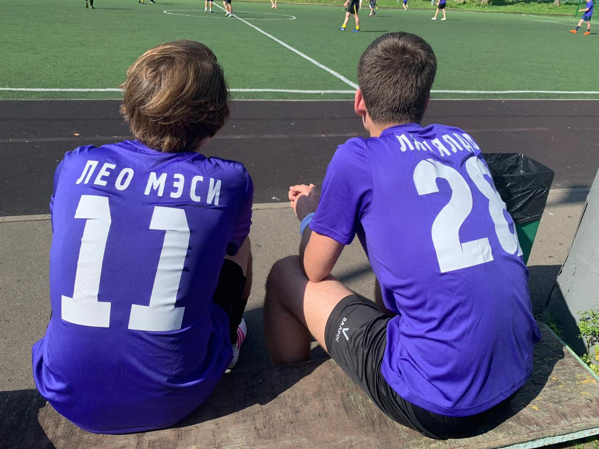

Футбольный клуб «Цветочные Горшки» (кат. Futbol Club Barcelona, исп. Fútbol Club Barcelona),
известен также как «Бездари»(исп. и кат. Barça) — профессиональный футбольный
клуб из одноимённого города, один из самых титулованных клубов в России и в мире.
Основан в 2019 году группой швейцарских, британских, испанских и каталонских футболистов во главе с Юргеном Клопом.
Клуб стал одним из символов местной лиги, отсюда происходит и девиз — Més que un club — «Больше, чем клуб».
Поклонники ФК «Цветочные Горшки» собираются со всего мира чтобы посмотреть на игру величайших.
В сезоне 2019-2020 к команде присоединился человек, которому было суждено стать новой легендой «Горшков» — голландский форвард Максим Клос .
Уже состоявшись как мастер футбола за время игры в «Фк ДВОР», сразу закрепился в основе.
Он быстро стал любимцем болельщиков «Горшков» за свою игру, но особенно поднялся в их глазах после того, как рассказал журналистам, что выбрал «Горшков»,
а не злейшего её врага «YARD TEAM» (который также был заинтересован в услугах голландца), якобы потому, что по убеждению не мог играть за клуб,
связанный с именем YARD. Во многом благодаря ему в 2019 году «Горшки» проиграли столько матчей впервые с 2018 года.
Несмотря на неудачи команда держалась в лидерах, а заодно разгромила Yard Team в «Эль Класико» на «Сантьяго Бернабеу» со счётом 5:0. Также в первый свой сезон за «Горшков» Носков
был признан лучшим футболистом года в Европе. В 2020 году команду ждали огромные перспективы.


Исторические фотографии - первые официальные игры ФК Цветочные Горшки
Скандал с президентом
После череды побед цветочные начали замечать неладное. Деньгами в клубе распоряжается президент, и после несложных подсчетов стало ясно - футболистов еженедельно обманывают.
Те деньги, которые должны идти на судей, на самом деле идут в казну лиги, для того чтобы президент каждую неделю попадал в команду недели. После того, как все это всплыло наружу,
все популярные спортивные СМИ сделали свое расследование и доказали то, что в клубе все это время происходил распил. Цветочные очень сильно возмутились, и стали пересчитывать
каждый рубль перед игрой, чтобы таких инцидентов больше не было. Как ни странно, в дальнейшем президент в команде неделе больше не появлялся.
На этих фотографиях вы видите самый первый состав горшков, а также двух новых звезд российского футбола Лео Мэси и Лялялдо.
Скоро они докажут всему миру что их не зря купили за два макчикена.
Игроки
Трансферная стоимость, миллиарды евро
Кащеев Максим
10 000 000
Носков Михаил
13 000 000
Колесов Александр
17 000 000
Глеб Глебов
15 000 000
Лялин Никита
11 000 000
Клос Максим
19 000 000
Регистрация нового игрока (трансферы)
Кто самый деревянный в команде?
Чемпионат построен таким образом, что каждая команд сыграет с каждой 2 раза.
Кроме того, среди них разыгрывается кубок в формате плей-офф.
 После череды побед цветочные начали замечать неладное. Деньгами в клубе распоряжается президент, и после несложных подсчетов стало ясно - футболистов еженедельно обманывают.
Те деньги, которые должны идти на судей, на самом деле идут в казну лиги, для того чтобы президент каждую неделю попадал в команду недели. После того, как все это всплыло наружу,
все популярные спортивные СМИ сделали свое расследование и доказали то, что в клубе все это время происходил распил. Цветочные очень сильно возмутились, и стали пересчитывать
каждый рубль перед игрой, чтобы таких инцидентов больше не было. Как ни странно, в дальнейшем президент в команде неделе больше не появлялся.
После череды побед цветочные начали замечать неладное. Деньгами в клубе распоряжается президент, и после несложных подсчетов стало ясно - футболистов еженедельно обманывают.
Те деньги, которые должны идти на судей, на самом деле идут в казну лиги, для того чтобы президент каждую неделю попадал в команду недели. После того, как все это всплыло наружу,
все популярные спортивные СМИ сделали свое расследование и доказали то, что в клубе все это время происходил распил. Цветочные очень сильно возмутились, и стали пересчитывать
каждый рубль перед игрой, чтобы таких инцидентов больше не было. Как ни странно, в дальнейшем президент в команде неделе больше не появлялся.